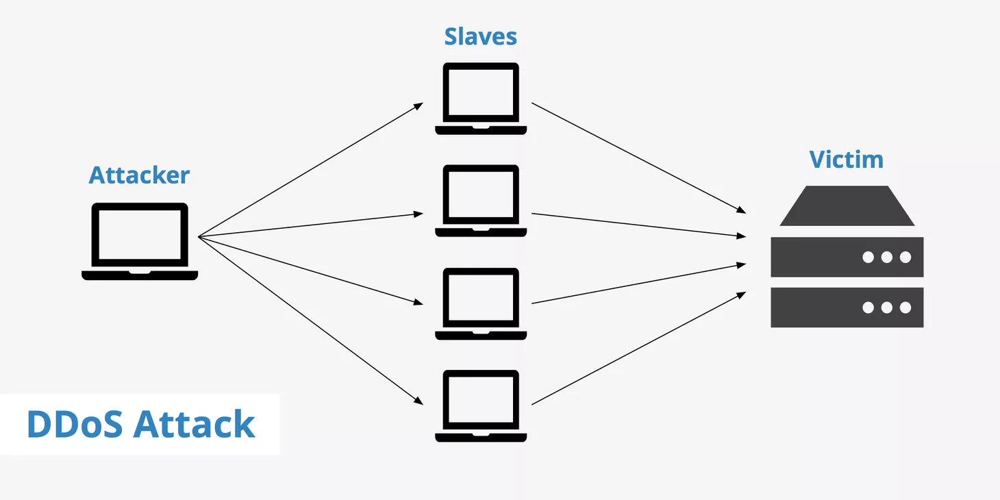
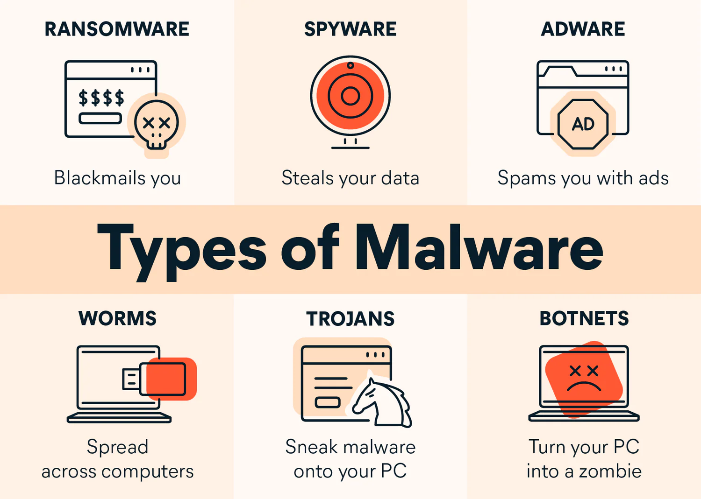

Los virus informaticos son programas maliciosos diseñados para replicrase y dañar sistemas. Pueden robar datos, corromper archivos o incluso tomar el control de tu dispositivo
La Ciberseguridad es esencial para protegernos de estas amenazas. Incluye el uso de antivirus, firewalls y practicas seguras como no abrir correos sospechosos. Sin ella, estamos expuestos a riesgos financieros y de privacidad
| Tipos de virus | Descripcion | Medida de Proteccion |
|---|---|---|
| Troyano | Se disfraza de software legitimo para robar datos | Usar antivirus actualizado |
| Ramsomwer | Encripta archivos y exige rescate | Realizar copias de seguridad regulares |
| Gusano | Se replica automaticamente en redes | configurar firewalls fuertes |
En resumen educarse sobre virus y adoptar medidad de Ciberseguridad puede prevenir desastres.¡Manten tu mundo digital seguro!
Gracias a todas las medidas tomadas ahora tus datos y la integridad de estos mismos estara protejida de ataques!